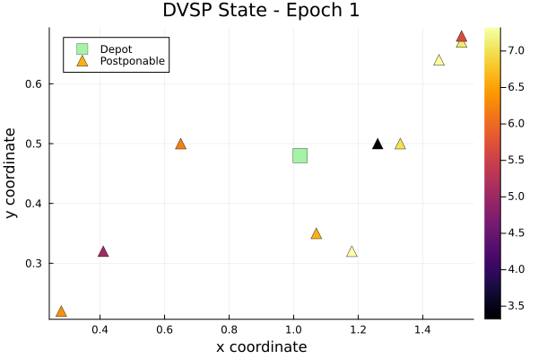
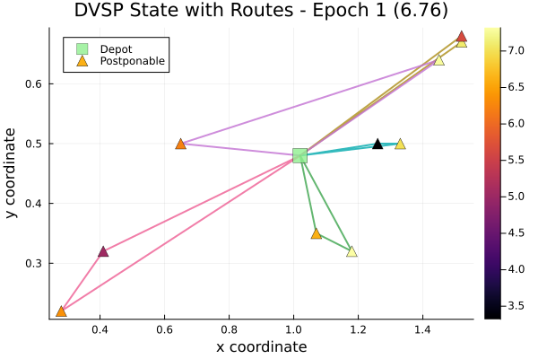
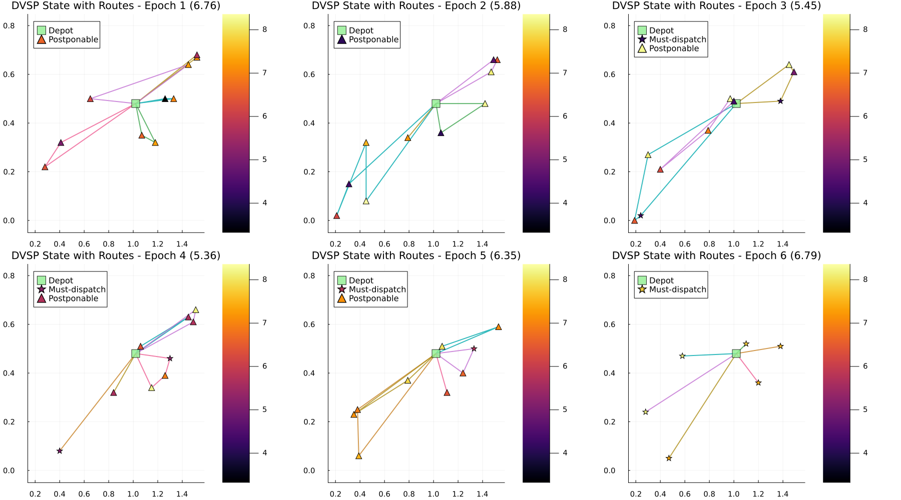

Dynamic Vehicle Scheduling
Dispatch vehicles to customers arriving over time: at each step the agent decides which customers to serve now and which to postpone, minimizing total travel cost.
using DecisionFocusedLearningBenchmarks
using Plots
b = DynamicVehicleSchedulingBenchmark()DynamicVehicleSchedulingBenchmark(10, 1.0, 1.0, false)Observable input
Generate one environment and roll it out with the greedy policy to collect a sample trajectory. At each step the agent observes customer positions, start times, and which customers have reached their dispatch deadline:
policies = generate_baseline_policies(b)
env = generate_environments(b, 1)[1]
_, trajectory = evaluate_policy!(policies.greedy, env)(-36.59, DataSample{@NamedTuple{instance::DecisionFocusedLearningBenchmarks.DynamicVehicleScheduling.DVSPState{DecisionFocusedLearningBenchmarks.DynamicVehicleScheduling.StaticInstance{Float64}}}, @NamedTuple{reward::Float64, step::Int64}, LinearAlgebra.Adjoint{Float64, Matrix{Float64}}, Vector{Vector{Int64}}, Nothing}[DataSample(x=[6.62 7.1 … 7.01 7.29; 6.74 7.25 … 7.11 7.39; … ; 0.9 0.8 … 0.8 0.8; 0.9 0.8 … 0.9 0.8], y=[[2, 6], [4, 11], [5, 3], [7, 10], [8, 9]], instance=DVSPState(current_epoch=1, location_indices=[1, 219, 129, 143, 250, 117, 157, 52, 180, 61, 207], is_must_dispatch=Bool[0, 0, 0, 0, 0, 0, 0, 0, 0, 0, 0], is_postponable=Bool[0, 1, 1, 1, 1, 1, 1, 1, 1, 1, 1]), reward=-6.76, step=1), DataSample(x=[4.1 8.26 … 7.19 4.3; 4.27 8.43 … 7.37 4.57; … ; 0.9 0.9 … 0.8 0.8; 0.9 1.0 … 0.9 0.9], y=[[2, 3], [9, 5, 8], [10], [11, 6, 4, 7]], instance=DVSPState(current_epoch=2, location_indices=[1, 155, 184, 140, 251, 248, 176, 203, 87, 82, 230], is_must_dispatch=Bool[0, 0, 0, 0, 0, 0, 0, 0, 0, 0, 0], is_postponable=Bool[0, 1, 1, 1, 1, 1, 1, 1, 1, 1, 1]), reward=-5.88, step=2), DataSample(x=[8.25 8.11 … 6.91 4.99; 8.53 8.19 … 7.03 5.14; … ; 0.877778 0.860714 … 0.8 0.8; 0.9 0.9 … 0.888889 0.858929], y=[[5, 7, 10, 4], [6, 11, 2], [8, 9, 3]], instance=DVSPState(current_epoch=3, location_indices=[1, 207, 258, 3, 193, 170, 91, 70, 86, 234, 181], is_must_dispatch=Bool[0, 0, 0, 0, 0, 1, 0, 1, 0, 0, 0], is_postponable=Bool[0, 1, 1, 1, 1, 0, 1, 0, 1, 1, 1]), reward=-5.45, step=3), DataSample(x=[5.71 8.22 … 5.68 8.18; 5.78 8.3 … 5.78 8.35; … ; 0.777778 0.857143 … 0.777778 0.777778; 0.857143 0.888889 … 0.857143 0.8], y=[[2, 9], [5], [7, 6], [8, 4, 3], [10]], instance=DVSPState(current_epoch=4, location_indices=[1, 181, 205, 133, 215, 68, 222, 30, 102, 232], is_must_dispatch=Bool[0, 0, 0, 0, 0, 0, 0, 1, 0, 1], is_postponable=Bool[0, 1, 1, 1, 1, 1, 1, 0, 1, 0]), reward=-5.36, step=4), DataSample(x=[7.14 7.04 … 6.91 7.9; 7.24 7.26 … 7.03 8.02; … ; 0.375 0.428571 … 0.555556 0.555556; 0.430159 0.505556 … 0.6025 0.625], y=[[2, 5], [3, 10], [4, 6], [8], [9, 7]], instance=DVSPState(current_epoch=5, location_indices=[1, 61, 189, 160, 199, 22, 5, 128, 120, 234], is_must_dispatch=Bool[0, 1, 0, 0, 0, 0, 0, 0, 0, 0], is_postponable=Bool[0, 0, 1, 1, 1, 1, 1, 1, 1, 1]), reward=-6.35, step=5), DataSample(x=27×0 adjoint(::Matrix{Float64}) with eltype Float64, y=[[2], [3], [4], [5], [6], [7]], instance=DVSPState(current_epoch=6, location_indices=[1, 37, 14, 249, 121, 83, 185], is_must_dispatch=Bool[0, 1, 1, 1, 1, 1, 1], is_postponable=Bool[0, 0, 0, 0, 0, 0, 0]), reward=-6.79, step=6)])The observable state at step 1: depot (green square), must-dispatch customers (red stars; deadline reached), postponable customers (blue triangles):
plot_context(b, trajectory[1])
A training sample
Each step in a trajectory is a labeled tuple (x, θ, y) plus state and reward:
x: 27-dimensional feature vector per customer (schedule slack, travel times, reachability)θ: prize per customer (predicted by the model; used as optimization input)y: routes dispatched at this stepinstance: full DVSP state (customer positions, deadlines, current epoch)reward: negative travel cost incurred at this step
One step with dispatched routes:
plot_sample(b, trajectory[1])
Multiple steps side by side: customers accumulate and routes change over time:
plot_trajectory(b, trajectory)
DFL pipeline components
The DFL agent chains two components: a neural network predicting a prize per customer:
model = generate_statistical_model(b) # Dense(27 → 1) per customer: state features → prizeChain(
Dense(27 => 1), # 28 parameters
vec,
) and a maximizer selecting routes that balance collected prizes against travel costs:
maximizer = generate_maximizer(b) # prize-collecting VSP solverLinearMaximizer(oracle, g, h)At each step, the model assigns a prize to each postponable customer. The solver then selects routes maximizing collected prizes minus travel costs, deciding which customers to serve now and which to defer.
Problem Description
Overview
In the Dynamic Vehicle Scheduling Problem (DVSP), a fleet operator must decide at each time step which customers to serve immediately and which to postpone. The goal is to serve all customers by end of the planning horizon while minimizing total travel time.
The problem is characterized by:
- Exogenous noise: customer arrivals are stochastic and follow a fixed distribution
- Combinatorial action space: routes are built over a large set of customers
Mathematical Formulation
State $s_t = (R_t, D_t, t)$ where:
- $R_t$: pending customers, each with coordinates, start time, service time
- $D_t$: must-dispatch customers (cannot be postponed further)
- $t$: current time step
Action $a_t$: a set of vehicle routes $\{r_1, r_2, \ldots, r_k\}$, each starting and ending at the depot, satisfying time constraints.
Reward:
\[r(s_t, a_t) = -\sum_{r \in a_t} \sum_{(i,j) \in r} d_{ij}\]
Objective:
\[\max_\pi \; \mathbb{E}\!\left[\sum_{t=1}^T r(s_t, \pi(s_t))\right]\]
Key Components
DynamicVehicleSchedulingBenchmark
| Parameter | Description | Default |
|---|---|---|
max_requests_per_epoch | Maximum new customers per time step | 10 |
Δ_dispatch | Time delay between decision and dispatch | 1.0 |
epoch_duration | Duration of each time step | 1.0 |
two_dimensional_features | Use 2D instead of full 27D features | false |
Features
Full features (27D per customer): start/end times, depot travel times, slack, reachability ratios, quantile-based travel times to other customers.
2D features: travel time from depot + mean travel time to others.
Baseline Policies
| Policy | Description |
|---|---|
| Lazy | Postpones all possible customers; serves only must-dispatch |
| Greedy | Serves all pending customers immediately |
DFL Policy
\[\xrightarrow[\text{State}]{s_t} \fbox{Neural network $\varphi_w$} \xrightarrow[\text{Prizes}]{\theta} \fbox{Prize-collecting VSP} \xrightarrow[\text{Routes}]{a_t}\]
The neural network predicts a prize $\theta_i$ for each postponable customer. The prize-collecting VSP solver then maximizes collected prizes minus travel costs:
\[\max_{a_t \in \mathcal{A}(s_t)} \sum_{r \in a_t} \left(\sum_{i \in r} \theta_i - \sum_{(i,j) \in r} d_{ij}\right)\]
Model:
- 2D features:
Dense(2 → 1)applied independently per customer - Full features:
Dense(27 → 1)applied independently per customer
This problem is a simplified version of the EURO-NeurIPS challenge 2022, and solved using DFL in Combinatorial Optimization enriched Machine Learning to solve the Dynamic Vehicle Routing Problem with Time Windows.
This page was generated using Literate.jl.